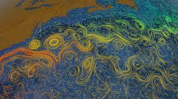
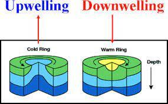
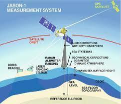
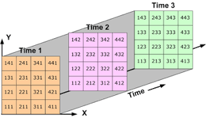
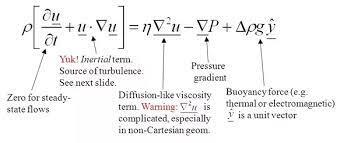
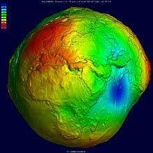

Our goal for this project is to create a comprehensive data set through our python knowledge, so we can predict future eddies by using machine learning.
What are Eddies?:
Ocean eddies are circular currents that move ocean water vertically (think of what happens when water moves around a rock in a river, but on a larger scale). They occur when surface ocean currents bend, causing spirals. We can detect eddies by measuring vertical velocity of the ocean, because they will stand out as points with higher vertical velocity.
Types of Eddies:
- Anticyclonic Eddies (rotate clockwise)
- Cyclonic Eddies (rotate anticlockwise)
- Mesoscale Eddies (radius of 10-1000 km, slower up and down welling)
- Sub-mesoscale Eddies (radius of less than 10 km faster up and down welling)

Why are Eddies Important?
In the ocean, there are very few things that cause vertical mixing. There are very few places that experience increased mixing of water from the surface and water from the deeper ocean. However, eddies are exceptions to that rule: they cause water to mix vertically across the ocean’s levels. This makes eddies important for scientists to locate and study for two reasons:
- The transfer of nutrients occurring due to vertical mixing in an eddie impacts the biological life in the area, making it a hotspot for many organisms, and a great place to study marine life.
- Vertical mixing also creates a unique environment for chemical reactions, due to the interaction between water with different temperatures and chemical compositions. A process that may be optimized in these conditions is ocean acidification, which is caused by the reaction of carbon (from the atmosphere) and oxygen. Climate scientists are interested in eddies because they may be hotspots for ocean acidification, and thus play a role in climate change.

Getting Our Data:
Satellite altimetry measures the time it takes for a radar pulse to travel from a satellite in space to the ocean surface. This is where our data came from!

Our data is in the form of a NetCDF file (Network Common Data Form). It is arranged in the form of an array, meaning it has multiple dimensions, each representing a variable, such as time, depth, latitude or longitude. To sort through this data, we used NetCDF commands.

Using Our Data:
The fortran code we used calculated the vertical velocity at all of the datapoints represented in the netCDF file using the Navier-Stokes equation, which requires density and geopotential as inputs.

The geopotential is a measure of vertical distance in relation to geoid, which is the calculated shape of earth's surface. We imported the geopotential directly from the netCDF file.

We had to calculate the seawater's density based off of other variables found in the netCDF file, since it wasn't already measured. We did this using an equation that takes into account salinity, temperature and depth to find density.